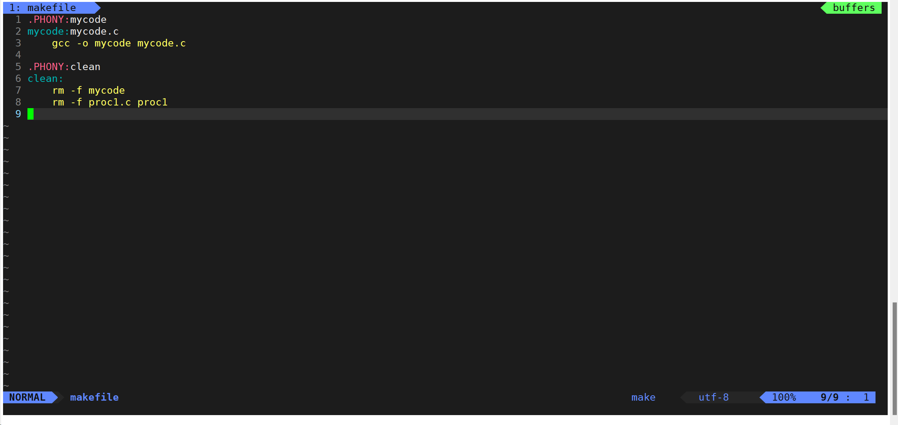

Linux_01 _make/makefile
实现原理
基础实例
-o 后面需要紧跟生成文件的名称测试提交
make 是一条指令
makefile 是当前目录下的文件
mycode.c TO mycode(可执行文件)
1 | mycode:mycode.c #依赖关系（其中mycode是目标文件，mycode.c是依赖文件） |
- make指令自动查找当前目录下的makefile文件，会在其中找到第一个目标文件
- 但用make指令，只会默认执行从上往下的第一个目标文件
- 可以直接
make mycode因为clean不在第一个，所以需要make clean去实现
对比先前方法
NEW
直接输入touch makefile指令创建，用vim makefile写入上述代码内容
在.c文件所在目录下直接make
删除用make clearn
OLD
vim doc.c
gcc doc.c -o process 其中 - o 表示生成可执行文件， process为可执行文件文件名
./process
应用实践
伪目标
根据文件的修改时间和编译时间进行检测。同一条目标文件不可连续编译两次及以上。
但是一般我们这种clean的目标文件，我们将它设置为伪目标,用 .PHONY 修饰,伪目标的特性是，总是被
执行的。
1
2
3
clean:
rm -f hello.i hello.s hello.o hello具体实例
1
2
3
4
5
6
7
8
9
10
11
12
13
14
15
16
17
18
19
20
21
22-rw-rw-r-- 1 sanshi sanshi 111 Jul 6 11:48 makefile
[sanshi@iZ2ze4xrxurbpglmuv68wlZ linux]$ vim mycode.c
[sanshi@iZ2ze4xrxurbpglmuv68wlZ linux]$ make
gcc -o mycode mycode.c
[sanshi@iZ2ze4xrxurbpglmuv68wlZ linux]$ ./mycode
hellloooooo!
[sanshi@iZ2ze4xrxurbpglmuv68wlZ linux]$ make
gcc -o mycode mycode.c
[sanshi@iZ2ze4xrxurbpglmuv68wlZ linux]$ make
gcc -o mycode mycode.c
[sanshi@iZ2ze4xrxurbpglmuv68wlZ linux]$ make clean
rm -f mycode
rm -f proc1.c proc1
[sanshi@iZ2ze4xrxurbpglmuv68wlZ linux]$ ll
total 8
-rw-rw-r-- 1 sanshi sanshi 111 Jul 6 11:48 makefile
-rw-rw-r-- 1 sanshi sanshi 79 Jul 6 11:49 mycode.c
特殊符号
在依赖方法处有更简介的符号写法
$@ 目标文件,$^ 依赖文件1
2
3
4
5
6mycode:mycode.c
gcc -o mycode mycode.c
# 可以简写为
mycode:mycode.c
gcc -o $@ $^